用法：A型题点选项即判；X型题先多选、再点【判卷】；答完自动展开解析。刷完本课再过一遍底部【本课速记卡】，效果最好。
一、系统性红斑狼疮（SLE）8 题
A型·单选Q1P1 · SLE
引起系统性红斑狼疮组织损害的物质是
答案与解析
答案：A
自身抗体导致组织损害（其本身无直接的细胞毒性，可攻击胞膜受损的细胞）。
📖 讲义定位：P1 · SLE
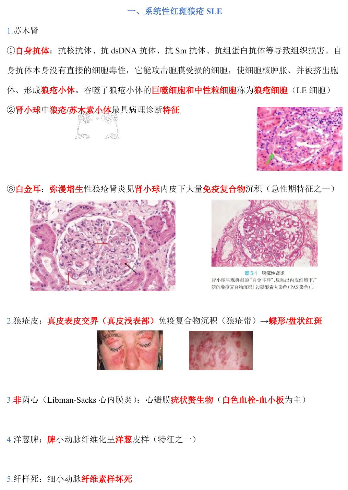
📷 讲义原图 · P1 · SLE
A型·单选Q2P1 · SLE
狼疮小体的本质是
答案与解析
答案：D
自身抗体攻击胞膜受损的细胞→细胞核肿胀、被挤出胞体→形成狼疮小体；吞噬了狼疮小体的巨噬细胞和中性粒细胞称狼疮细胞（LE 细胞）。
📖 讲义定位：P1 · SLE
A型·单选Q3P1 · SLE
LE 细胞是指
答案与解析
答案：B
LE 细胞＝吞噬狼疮小体的巨噬细胞和中性粒细胞。
📖 讲义定位：P1 · SLE
A型·单选Q4P1 · SLE
诊断红斑狼疮性肾炎最有价值的病变是
答案与解析
答案：C
肾小球中狼疮/苏木素小体最具病理诊断特征。
📖 讲义定位：P1 · SLE
A型·单选Q5P1 · SLE
SLE 患者肾小球内皮下大量免疫复合物沉积、光镜下呈所谓『白金耳』，见于
答案与解析
答案：C
『白金耳』：弥漫增生性狼疮肾炎见肾小球内皮下大量免疫复合物沉积（急性期特征之一）。
📖 讲义定位：P1 · SLE
A型·单选Q6P1 · SLE
狼疮带（免疫复合物沉积）位于
答案与解析
答案：A
狼疮皮：真皮表皮交界（真皮浅表部）免疫复合物沉积（狼疮带）→蝶形/盘状红斑。
📖 讲义定位：P1 · SLE
A型·单选Q7P1 · SLE
Libman-Sacks 心内膜炎（非细菌性心内膜炎）赘生物的主要成分是
答案与解析
答案：D
非菌心（Libman-Sacks 心内膜炎）：心瓣膜疣状赘生物（白色血栓——血小板为主）。
📖 讲义定位：P1 · SLE
X型·多选Q8P1 · SLE
系统性红斑狼疮的特征性病变有
答案与解析
答案：ACD
B 错：讲义未将广泛血栓形成为 SLE 特征。SLE 要点：『苏木肾、狼疮皮、非菌心、洋葱脾、纤样死』。
📖 讲义定位：P1 · SLE
二、类风湿关节炎7 题
A型·单选Q9P2 · 类风湿
类风湿因子（RF）的本质是
答案与解析
答案：B
RF（IgM）：此抗体相关的抗原为 IgG 的 Fc 片段。
📖 讲义定位：P2 · 类风湿
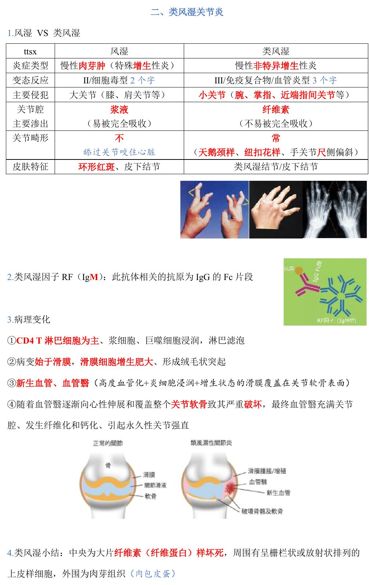
📷 讲义原图 · P2 · 类风湿
A型·单选Q10P2 · 类风湿
类风湿关节炎的病变起始部位是
答案与解析
答案：C
病变始于滑膜：滑膜细胞增生肥大、形成绒毛状突起。
📖 讲义定位：P2 · 类风湿
A型·单选Q11P2 · 类风湿
类风湿关节炎中『血管翳』的组成是
答案与解析
答案：A
血管翳＝高度血管化＋炎细胞浸润＋增生状态的滑膜覆盖在关节软骨表面。
📖 讲义定位：P2 · 类风湿
A型·单选Q12P2 · 类风湿
类风湿关节炎引起永久性关节强直的机制是
答案与解析
答案：B
血管翳向心性伸展和覆盖→软骨破坏→血管翳充满关节腔、纤维化和钙化→永久性关节强直。
📖 讲义定位：P2 · 类风湿
A型·单选Q13P2 · 类风湿
类风湿小结的典型结构是
答案与解析
答案：D
类风湿小结：中央大片纤维素（纤维蛋白）样坏死＋周围栅栏状/放射状上皮样细胞＋外围肉芽组织（『肉包皮蛋』）。
📖 讲义定位：P2 · 类风湿
A型·单选Q14P2 · 类风湿
类风湿关节炎滑膜内浸润的特征性细胞是
答案与解析
答案：B
以 CD4 T 淋巴细胞为主，伴浆细胞、巨噬细胞浸润及淋巴滤泡形成。
📖 讲义定位：P2 · 类风湿
X型·多选Q15P2 · 类风湿
类风湿关节炎的滑膜改变有
答案与解析
答案：BCD
A 错：类风湿为慢性非特异性增生性炎，浸润以淋巴细胞、浆细胞为主，不是大量中性粒细胞。
📖 讲义定位：P2 · 类风湿
三、艾滋病（AIDS）7 题
A型·单选Q16P3 · AIDS
HIV 感染的主要细胞是
答案与解析
答案：D
HIV 主要感染 CD4 T 细胞/辅助 T；也感染单核-巨噬细胞（储备池）、滤泡树突状细胞（储备池）、神经系统。
📖 讲义定位：P3 · AIDS
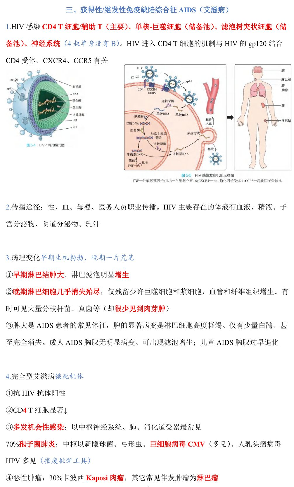
📷 讲义原图 · P3 · AIDS
X型·多选Q17P3 · AIDS
HIV 病毒可以感染的人体细胞有
答案与解析
答案：ACD
B 错：HIV 不感染 B 淋巴细胞。进入 CD4 T 细胞的机制与 gp120 结合 CD4 受体、CXCR4、CCR5 有关。
📖 讲义定位：P3 · AIDS
A型·单选Q18P3 · AIDS
艾滋病早期淋巴结的病变特点是
答案与解析
答案：C
早期『生机勃勃』：淋巴结肿大、淋巴滤泡明显增生；晚期『一片荒芜』：淋巴细胞几乎消失殆尽。
📖 讲义定位：P3 · AIDS
A型·单选Q19P3 · AIDS
艾滋病晚期淋巴结的特点是
答案与解析
答案：A
晚期：淋巴细胞几乎消失殆尽，仅残留少许巨噬细胞和浆细胞，血管和纤维组织增生；有时可见大量分枝杆菌、真菌等（却很少见到肉芽肿）。
📖 讲义定位：P3 · AIDS
A型·单选Q20P3 · AIDS
艾滋病患者机会性感染时最常受累的部位是
答案与解析
答案：A
以中枢神经系统、肺、消化道受累最常见；70% 肺孢子菌肺炎；中枢以新隐球菌、弓形虫、巨细胞病毒 CMV、人乳头瘤病毒 HPV 多见。
📖 讲义定位：P3 · AIDS
A型·单选Q21P4 · AIDS
Kaposi 肉瘤来源于
答案与解析
答案：B
Kaposi 肉瘤来源于血管或淋巴内皮细胞（由梭形细胞和血管构成，瘤细胞弥漫分布、实质与间质分界不清；约 30% 艾滋病患者伴发）。
📖 讲义定位：P4 · AIDS
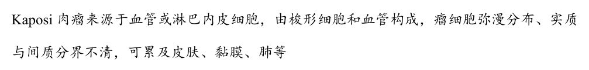
📷 讲义原图 · P4 · AIDS
A型·单选Q22P3 · AIDS
艾滋病患者脾的显著病变是
答案与解析
答案：D
脾大是常见体征，显著病变为淋巴细胞高度耗竭、仅有少量白髓甚至完全消失；成人胸腺无明显病变、可出现滤泡增生；儿童胸腺过早退化。
📖 讲义定位：P3 · AIDS
四、其它免疫缺陷病3 题
A型·单选Q23P4 · 免疫缺陷
DiGeorge 综合征（先天性胸腺发育不良）的缺陷是
答案与解析
答案：C
DiGeorge 综合征：T 细胞缺陷。
📖 讲义定位：P4 · 免疫缺陷
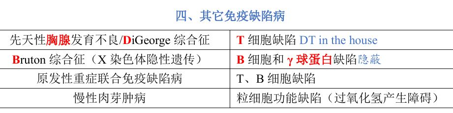
📷 讲义原图 · P4 · 免疫缺陷
A型·单选Q24P4 · 免疫缺陷
Bruton 综合征的缺陷是
答案与解析
答案：B
Bruton 综合征：A 细胞和 γ 球蛋白缺陷（X 染色体隐性遗传）。
📖 讲义定位：P4 · 免疫缺陷
A型·单选Q25P4 · 免疫缺陷
慢性肉芽肿病的缺陷是
答案与解析
答案：C
慢性肉芽肿病：粒细胞功能缺陷（过氧化氢产生障碍）；原发性重症联合免疫缺陷病＝T、D 细胞联合缺陷。
📖 讲义定位：P4 · 免疫缺陷
五、排斥反应6 题
A型·单选Q26P4 · 排斥反应
决定排斥反应轻重的因素是
答案与解析
答案：A
决定排斥反应轻重：供者与受者 HLA 的差异程度。
📖 讲义定位：P4 · 排斥反应
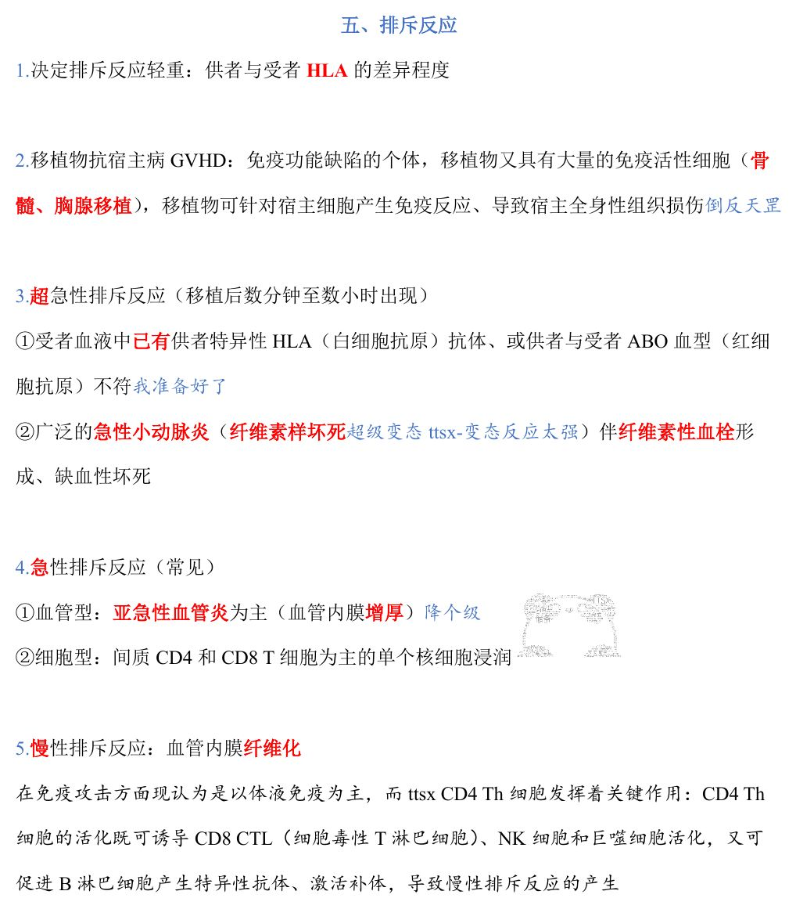
📷 讲义原图 · P4 · 排斥反应
A型·单选Q27P4 · 排斥反应
移植物抗宿主病（GVHD）的发生条件是
答案与解析
答案：D
GVHD：免疫功能缺陷的个体＋移植物具有大量免疫活性细胞（骨髓、胸腺移植）→移植物针对宿主细胞产生免疫反应、导致宿主全身性组织损伤。
📖 讲义定位：P4 · 排斥反应
A型·单选Q28P4 · 排斥反应
超急性排斥反应的机制是
答案与解析
答案：C
超急性排斥反应（移植后数分钟至数小时）：受者血液中已有供者特异性 HLA 抗体、或供受者 ABO 血型（红细胞抗原）不符。
📖 讲义定位：P4 · 排斥反应
A型·单选Q29P4 · 排斥反应
超急性排斥反应的病理变化是
答案与解析
答案：B
超急性排斥：广泛急性小动脉炎（纤维素样坏死）伴纤维素性血栓形成、缺血性坏死。
📖 讲义定位：P4 · 排斥反应
A型·单选Q30P4 · 排斥反应
急性细胞型排斥反应的主要浸润细胞是
答案与解析
答案：D
急性排斥反应（常见）：血管型＝亚急性血管炎为主（内膜增厚）；细胞型＝间质 CD4 和 CD8 T 细胞为主的单个核细胞浸润。
📖 讲义定位：P4 · 排斥反应
A型·单选Q31P4 · 排斥反应
慢性排斥反应的典型血管改变是
答案与解析
答案：A
慢性排斥反应：血管内膜纤维化；现认为以体液免疫为主、CD4 Th 细胞发挥关键作用。
📖 讲义定位：P4 · 排斥反应
六、变态/超敏反应类型3 题
A型·单选Q32P5 · 超敏类型
引起系统性红斑狼疮的超敏反应类型是
答案与解析
答案：B
SLE 属于 Ⅲ 型（多数 SLE、多数肾小球肾炎、类风湿、大动脉炎均属 Ⅲ 型）。
📖 讲义定位：P5 · 超敏类型
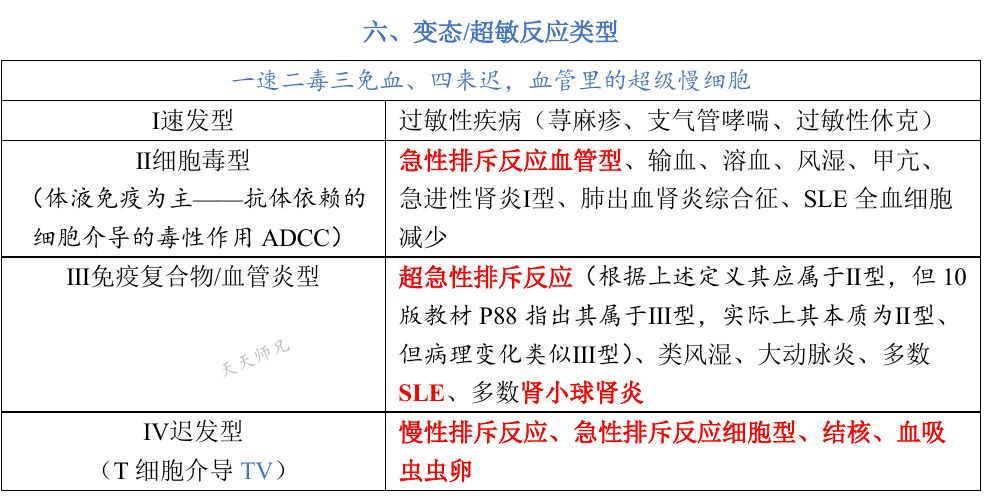
📷 讲义原图 · P5 · 超敏类型
X型·多选Q33P5 · 超敏类型
关于超敏反应类型，下列叙述正确的有
答案与解析
答案：ABC
D 错：结核属于 Ⅳ 型（迟发型，T 细胞介导）——Ⅳ 型还包括慢性排斥、急性排斥细胞型、血吸虫虫卵。
📖 讲义定位：P5 · 超敏类型
A型·单选Q34P5 · 超敏类型
下列属于 Ⅱ 型（细胞毒型）超敏反应的疾病是
答案与解析
答案：A
Ⅱ 型：输血溶血、风湿、甲亢、急进性肾炎Ⅰ型、肺出血肾炎综合征、SLE 全血细胞减少、急性排斥反应血管型等。
📖 讲义定位：P5 · 超敏类型
本课速记卡
SLE（『苏木肾、狼疮皮、非菌心、洋葱脾、纤样死』）
- 自身抗体（抗核、抗 dsDNA、抗 Sm 等）→组织损害；无直接细胞毒性
- 狼疮小体＝受损细胞核被挤出；LE 细胞＝吞噬狼疮小体的巨噬/中性粒细胞
- 肾：苏木素小体最具诊断特征；白金耳＝弥漫增生性肾炎内皮下大量免疫复合物
- 皮肤：狼疮带＝真皮表皮交界沉积；心：Libman-Sacks 赘生物＝白色血栓；脾：洋葱皮样；细小动脉纤维素样坏死
类风湿关节炎
- RF＝抗 IgG Fc 的 IgM 抗体
- 始于滑膜：滑膜细胞增生肥大、绒毛状突起；CD4 T 为主浸润＋淋巴滤泡
- 血管翳（高度血管化＋炎细胞＋增生滑膜覆盖软骨）→软骨破坏→纤维化钙化→永久强直
- 类风湿小结：中央纤维素样坏死＋周围栅栏状上皮样细胞＋外围肉芽组织
艾滋病（AIDS）
- HIV 感染 CD4 T（主要）、单核-巨噬、滤泡树突、神经系统；gp120-CD4/CXCR4/CCR5
- 淋巴结：早期滤泡增生→晚期淋巴细胞殆尽（很少肉芽肿）；脾：淋巴高度耗竭
- 机会感染：中枢/肺/消化道（孢子菌肺炎 70%；CMV、隐球菌、弓形虫、HPV）
- 肿瘤：30% Kaposi 肉瘤（血管/淋巴内皮来源）；淋巴瘤
免疫缺陷 · 排斥 · 超敏
- DiGeorge＝T；Bruton＝B＋γ球蛋白；联合缺陷＝T、B；慢性肉芽肿病＝粒细胞（H2O2 障碍）
- 决定排斥轻重＝HLA 差异；GVHD＝免疫缺陷者＋骨髓/胸腺移植物
- 超急性＝急性小动脉炎纤维素样坏死（预存抗体/ABO 不符）；急性细胞型＝CD4/CD8 T；慢性＝内膜纤维化
- 超敏口诀『一速二毒三免血、四来迟』：Ⅰ 过敏；Ⅱ 输血/风湿/甲亢/急进性肾炎Ⅰ型；Ⅲ SLE/类风湿/超急性排斥；Ⅳ 结核/细胞型排斥
📚 网站题库（导入）10 组 · 20 题
说明：本部分为外部题库导入（来源：「西综题库」网站 · 病理学），题干、选项与答案保留原样；标注「教师补充」的答案未经讲义逐项复核。做题方式：点字母选择（多选后点【判卷】；答案可点开「答案与出处」查看）。
原发性免疫缺陷病B型题
A Bruton综合征（X染色体隐性遗传）
B 原发性重症联合免疫缺陷病
C 先天性胸腺发育不良/DiGeorge综合征
D 慢性肉芽肿病
网站题W1第17讲 · 第4页
T细胞缺陷
答案与出处
答案：C
📖 第17讲 · 第4页
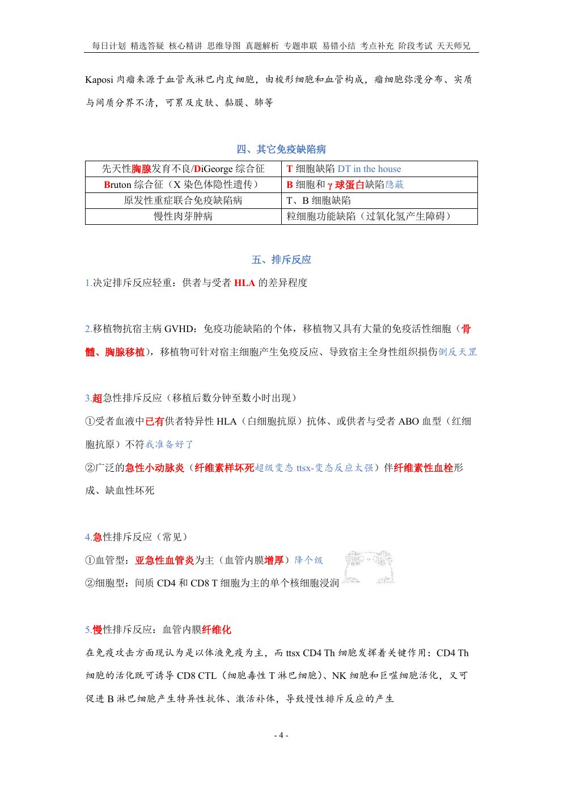
📷 讲义原图 · 第17讲 · 第4页
网站题W2第17讲 · 第4页
B细胞和γ球蛋白缺陷
答案与出处
网站题W3第17讲 · 第4页
T、B细胞缺陷
答案与出处
网站题W4第17讲 · 第4页
粒细胞功能缺陷（过氧化氢产生障碍）
答案与出处
移植排斥反应B型题
A 受者血液中已有供者特异性HLA抗体，或供者与受者ABO血型不符
B 血管型：亚急性血管炎为主（血管内膜增厚）
C 血管内膜纤维化
D 广泛的急性小动脉炎（纤维素样坏死）伴纤维素性血栓形成、缺血性坏死
E 细胞型：间质CD4和CD8 T细胞为主的单个核细胞浸润
F 移植后数分钟至数小时出现
网站题W5第17讲 · 第4页
超急性排斥反应
答案与出处
网站题W6第17讲 · 第4页
急性排斥反应
答案与出处
网站题W7第17讲 · 第4页
慢性排斥反应
答案与出处
四型超敏反应B型题
A 荨麻疹
B 输血
C 溶血
D 支气管哮喘
E 风湿
F 类风湿
G 甲亢
H 过敏性休克
I 超急性排斥反应
J 慢性排斥反应
K 急性排斥反应血管型
L 急性排斥反应细胞型
M SLE全血细胞减少
N 多数SLE
O 结核
P 血吸虫虫卵
Q 急进性肾炎I型
R 肺出血肾炎综合征
S 大动脉炎
T 多数肾小球肾炎
U 体液免疫为主
V T细胞介导
网站题W8第17讲 · 第5页
I型速发型
答案与出处
答案：ADH
📖 第17讲 · 第5页
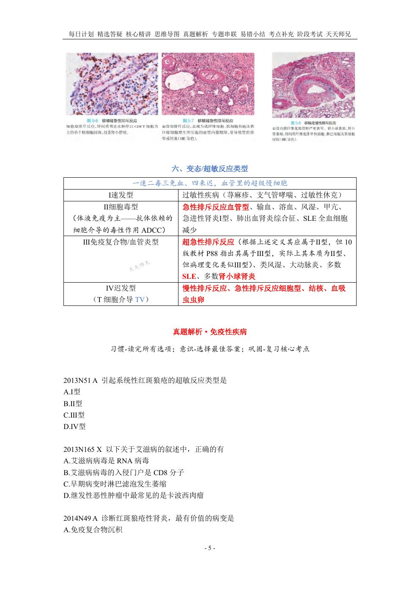
📷 讲义原图 · 第17讲 · 第5页
网站题W9第17讲 · 第5页
II型细胞毒型
答案与出处
网站题W10第17讲 · 第5页
III型免疫复合物/血管炎型
答案与出处
网站题W11第17讲 · 第5页
IV型迟发型
答案与出处
体液免疫缺陷B型题
A 原发性丙种球蛋白缺乏症
B 重症联合性免疫缺陷病
C DiGeorge 综合征
D 孤立性IgA缺乏症
E Wiskott-Aldrich综合征
F Nezelof 综合征
G 普通变异型免疫缺陷病
H 共济失调毛细血管扩张症
I 黏膜皮肤念珠菌病
网站题W12第17讲 · 第4页
体液免疫缺陷
答案与出处
网站题W13第17讲 · 第4页
联合性免疫缺陷
答案与出处
网站题W14第17讲 · 第4页
细胞免疫缺陷
答案与出处
确诊狼疮性肾炎的特征性依据有多项选择教师补充
A 抗核抗体阳性
B 苏木素小体
C 弥漫增生性肾炎中免疫复合物沉积
D 系膜增生性肾炎中免疫复合物沉积
网站题W15第17讲 · 第1页
确诊狼疮性肾炎的特征性依据有(多选)
答案与出处
答案：BC
📖 第17讲 · 第1页
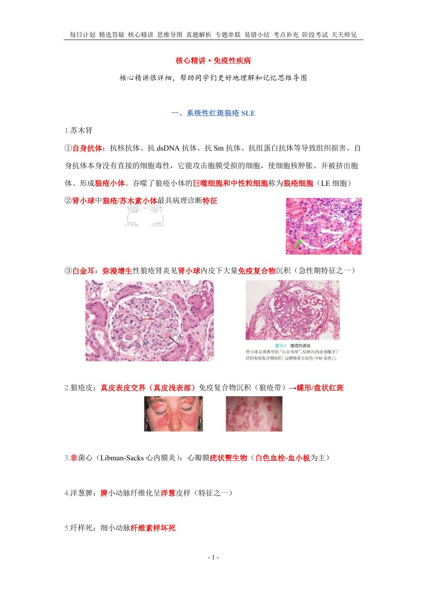
📷 讲义原图 · 第17讲 · 第1页
可携带HIV病毒通过血脑屏障,引起中枢神经系统感染的细胞是单项选择教师补充
A CD4T细胞
B CD8T细胞
C 单核巨噬细胞
D 滤泡树突状细胞
网站题W16第17讲 · 第3页
可携带HIV病毒通过血脑屏障,引起中枢神经系统感染的细胞是(单选)
答案与出处
答案：C
📖 第17讲 · 第3页
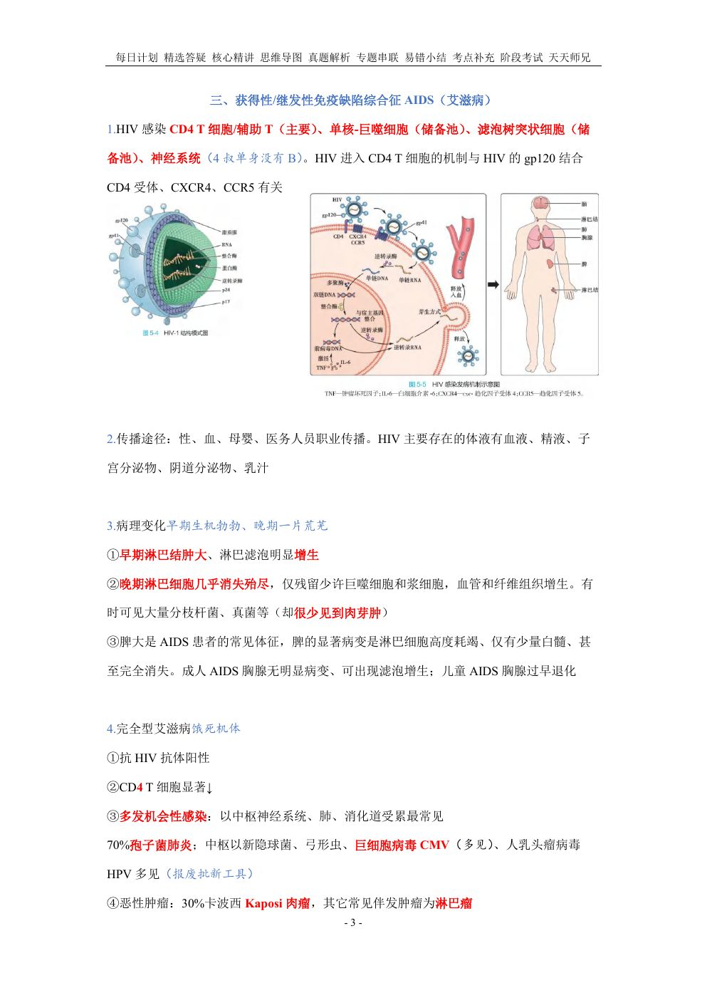
📷 讲义原图 · 第17讲 · 第3页
HIV直接引起的脑部疾病有多项选择教师补充
A 脑膜炎
B 痴呆
C 进行性多灶性白质脑病
D 亚急性脑病
网站题W17
HIV直接引起的脑部疾病有(多选)
答案与出处
以下疾病的发病机制涉及 III 型超敏反应的有多项选择教师补充
A 系统性红斑狼疮
B 血吸虫病肾小球肾炎
C 慢性排斥反应
D 类风湿关节炎
网站题W18第17讲 · 第6页
以下疾病的发病机制涉及 III 型超敏反应的有(多选)
答案与出处
答案：ABD
📖 第17讲 · 第6页
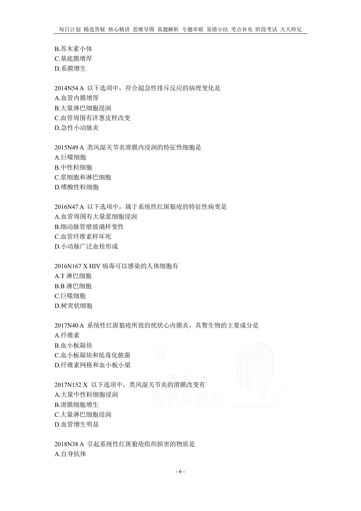
📷 讲义原图 · 第17讲 · 第6页
在自身免疫病的发病机制中,自身抗原的改变形式主要有多项选择教师补充
A 隐蔽抗原暴露
B 分子模拟
C 表位扩展
D Tr细胞与Th细胞功能失衡
网站题W19
在自身免疫病的发病机制中,自身抗原的改变形式主要有(多选)
答案与出处
以下属于原发性细胞免疫缺陷疾病的有多项选择教师补充
A DiGeorge综合征
B 黏膜皮肤念珠菌病
C 原发性丙种球蛋白缺乏症
D 共济失调毛细血管扩张症 ⸻⸻⸻⸻
网站题W20第17讲 · 第7页
以下属于原发性细胞免疫缺陷疾病的有(多选)
答案与出处
答案：AB
📖 第17讲 · 第7页
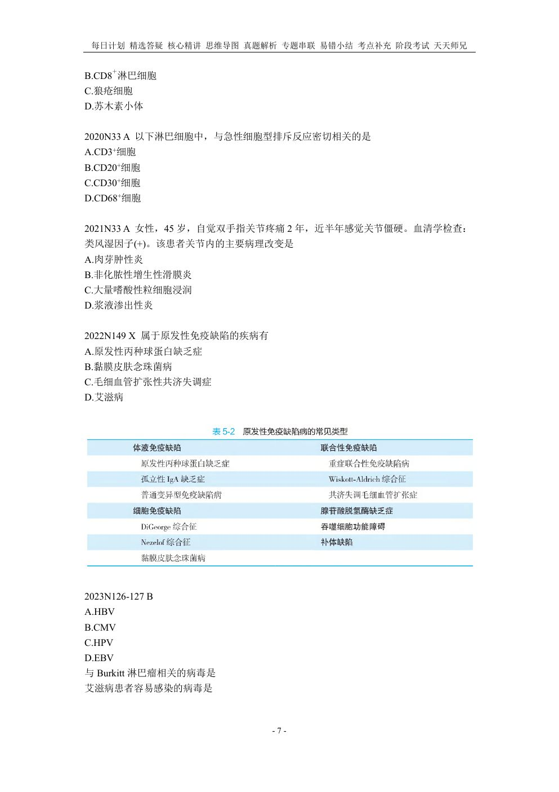
📷 讲义原图 · 第17讲 · 第7页
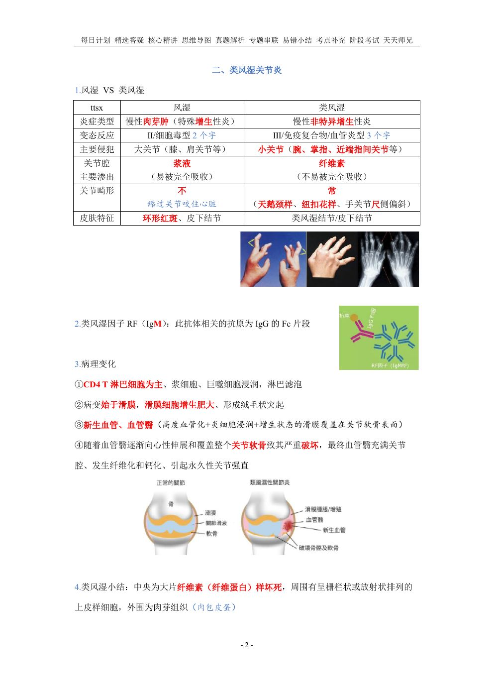
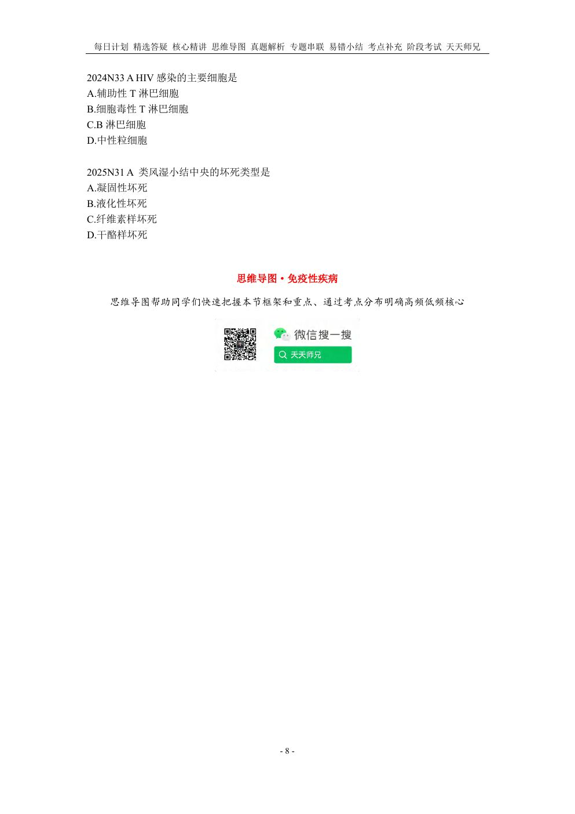